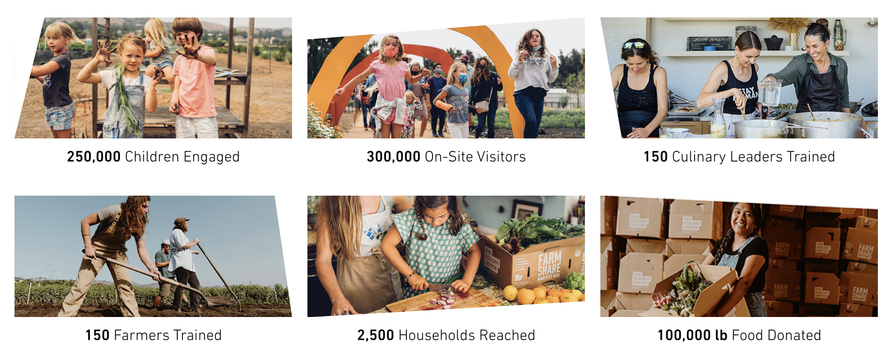

We are in business to shift culture. By curating ecological experiences for everyone, we provide creative yet achievable solutions for thriving on planet Earth.
We believe everyone should have access to the tools, knowledge, and skills that promote healthy communities in the 21st century. This continues to drive our environmental, experiential and instructional design across our facilities, activations and curricula. We are recognized as educators, connectors and community builders that are leading the charge around the conversation about better, healthy living. It is our contribution to an abundant future.
The 4 core
pillars of our
modern village
Our holistic approach integrates the incubation of the next generation of agricultural, culinary, and educational leaders with the creation of a vibrant community resource and gathering place to inspire all. We recognize and honor the interdependence among the functions of these four pillars within our village. The way Grow, Eat, Make and Peace touches all that happens here is part of the magic.
We’ve transformed a one-acre dirt lot into a thriving community ecosystem.
We’ve created an ecosystem to gather and build a community of creatives, self-starters, architects, makers, farmers, culinary leaders, visionaries, educators, and organizers. Together, we are building a more abundant future. One that the next generations will be proud to inherit.
IN OUR 15 YEAR HISTORY
We’ve made great progress toward a better understanding of our shared roles in the world around us.
We have imagined and successfully conveyed a vision for a culture that gives more than it takes—ideals that have been demonstrated daily through the Center’s onsite and outreach programs. Today, we are a destination where people from across the region come to plant seeds, tend the garden, create with their hands, and share a meal in celebration.

For more than 100 years, industrial agriculture has promised us more food at greater convenience and lower cost—but the true cost was the health of people, animals, and the planet we all call home. Synthetic fertilizers and pesticides that destroy the soil biome, pollute oceans, and leave toxic residue on our food are only the beginning. The practices of industrial agriculture lead to loss of genetic diversity in our crops and foodways, foster dangerous and inequitable conditions for workers, and contribute significantly to climate change.
We have seen a better way. Our farm’s Regenerative Organic Certification™ represents the set of agricultural and business practices we follow based on traditional principles of collective land stewardship, using the mutually supportive relationships found in nature to nourish humans, plants, and soil. This rigorous model focuses on the long-term health of the land rather than short-term profits, giving us an opportunity to prove the power of giving more than we take to cultivate sustainable abundance for all.
Our model for abundance and excellence.
Get inspired by our latest accomplishments and see what is possible when our community collaborates for change in our 2023 Impact Report and Case for Support.